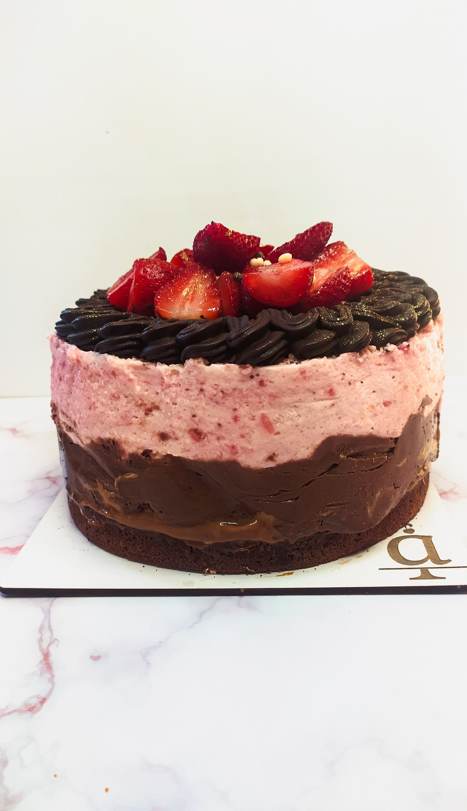
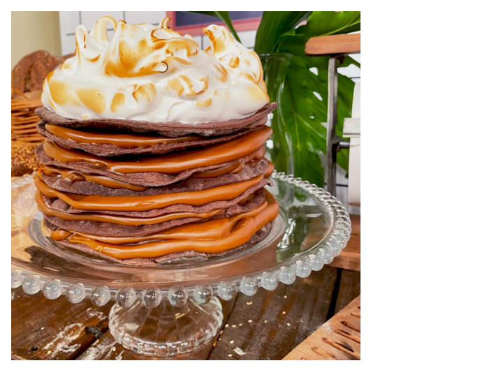

Torta Brownie
Bomba chocolatosa hiper llena de ddl

Mousse de Frutilla
Riki rikon mousse de frutifruti
Cheescake de Frutos Rojos
Torta refrescante llena de frutas
Torta Cookie
Torta Cookie

Rogel
Torta rogel con una banda de ddl

Lemon Pie
Deliciosa torta lemon pie
Tortas
MOUSSES
Chocotorta

Lemon Pie
Torta Frutal

Selva Negra

Box Brownies
Box con 4 diferentes tipos de brownie.

- 1 con dulce de leche, crema y chocolate
- 1 con dulce de leche, crema y frutillas
- 1 brownie clásico
- 1 un brownie rockelts
Desayunos
- Chipa
- Scoons
- Medialunas
- Grisines Saborizados
Tortas Personalizadas

Tortas personalizadas decoradas con buttercream, tres pisos de bizcocho húmedo, dos rellenos aptos y a elección.
Base
Relleno
Topppings
Bizcochuelo de Chocolate
Dulce De Leche
Chips de Chocolate
Bizcochuelo de Vainilla
Mousse de Chocolate
Frutas
Bizcochuelo de Limon
Dulce de Leche con Frutas
Merengue